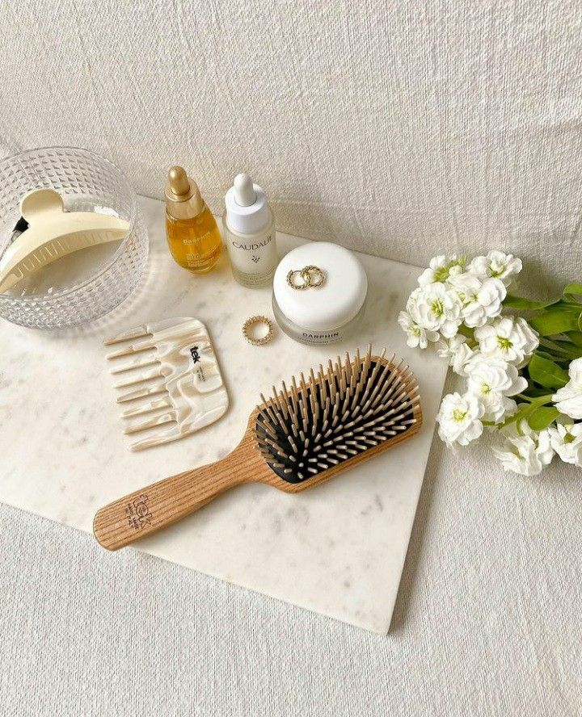
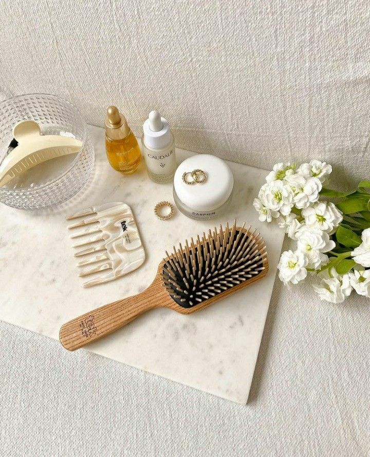

Hair is more than just a part of your appearance; it’s a reflection of your health and personality. At Hair by Kennedy, we believe that proper haircare is an essential aspect of self-care. The most important, essentail products for maintaining good hair health are:
Hair brushes
Hair products
Hair elastics
Whether you’re maintaining luscious curls, sleek locks, or textured tresses, understanding your hair type and its unique needs is the first step to achieving your dream look. Hair types generally fall into four categories: straight, wavy, curly, and coily, with further variations based on thickness and porosity. Each type has distinct characteristics and care requirements. For example, straight hair tends to get oily quickly, while curly and coily hair are often prone to dryness. By recognizing these traits, you can tailor your haircare practices to keep your locks looking their best.
Once you’ve identified your hair type, choosing the right products becomes crucial. Sulfate-free shampoos, hydrating conditioners, and natural oils are beneficial for most hair types, but some require extra care. Curly and coily hair thrive on products that enhance moisture and reduce frizz, while fine hair may need lightweight formulas that avoid weighing it down. At Hair by Kennedy, we recommend experimenting to find the perfect combination that complements your unique hair needs.
Cleansing and moisturizing are the pillars of any effective haircare routine. Washing your hair too frequently can strip it of natural oils, leading to dryness and breakage. On the other hand, neglecting regular cleansing can result in buildup and an unhealthy scalp. Striking a balance is key, and the frequency depends on your hair type and lifestyle. Incorporating a deep conditioning treatment weekly can further enhance your hair’s elasticity, shine, and overall health.
Protecting your hair from damage is just as important as nourishing it. Heat styling tools, harsh chemical treatments, and prolonged sun exposure can weaken your strands over time. If you frequently style your hair with heat, always use a heat protectant spray to minimize damage. Protective hairstyles can also shield your hair, especially during harsh weather or while sleeping. At Hair by Kennedy, we emphasize the importance of being gentle with your hair to maintain its natural strength.
Diet and overall health play a significant role in haircare. A balanced diet rich in vitamins, minerals, and proteins supports hair growth and strength. Drinking plenty of water and managing stress are equally important, as dehydration and stress can lead to dryness and hair loss. Incorporating these healthy habits into your lifestyle can enhance the effectiveness of your haircare routine, giving you a radiant and thriving mane.
Haircare is a journey, not a destination, and consistency is key. At Hair by Kennedy, our mission is to help you achieve your healthiest hair yet, with personalized advice and quality products. By understanding your hair’s unique needs and nurturing it with love and care, you’ll not only look your best but also feel confident and empowered every day.


 
